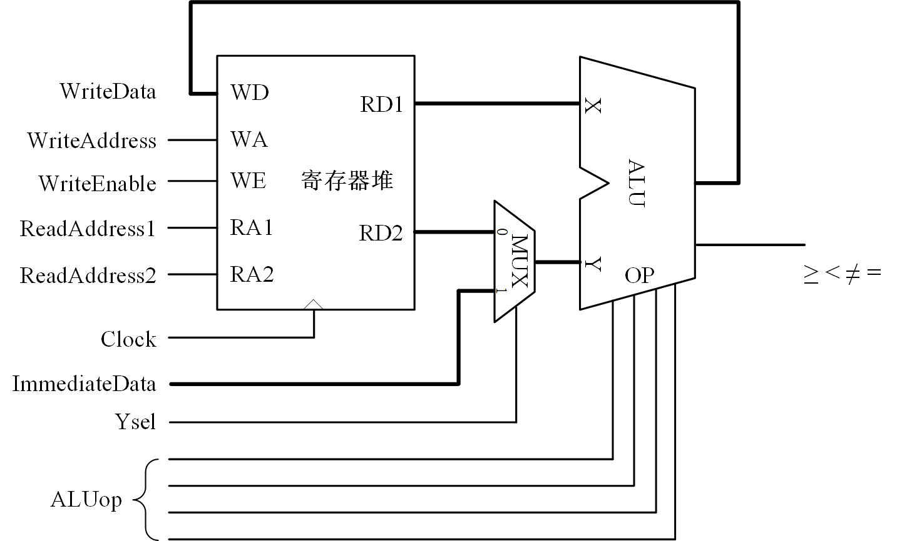

单周期数据通路实验
实验原理
图 1是本实验的单周期数据通路，该数据通路使用了前面实验中的ALU和三端口寄存器堆，2个读端口向ALU的两个输入端提供运算数据，1个写端口接收ALU的运算结果，可以一个周期完成读数据、运算、存结果。

图 1. 单周期数据通路
实验任务
-
设计
用Digital仿真软件按照图 1绘制电路图。 ALU和三端口寄存器堆使用前面实验完成的。
-
仿真
编写测试用例完成以下验证操作。
-
将2个常数存入R1、R2寄存器
常数通过ImmediateData输入引脚送入。从图 1可以看出，ImmediateData并没有直接连在寄存器堆的写端口，而是经过多路器后送到了ALU的Y输入端；所以要将ImmediateData送到寄存器堆的写端口，必须经过ALU。在前面寄存器堆的实验中已经设计R0寄存器的值恒为0，可以用ALU将ImmediateData加上R0寄存器值，将ImmediateData传送到寄存器堆的写端口。
存入的常数应有助于判别下面将要验证的各种运算结果是否正确。
-
完成以下运算并验证结果是否正确。
R1 + R2 → R3;
R1 − R2 → R3;
R1 ⊕ 0b1111 → R3;
在结果与预期不符的情况下，尝试独立分析故障现象并排除故障，锻炼分析问题与解决问题的能力。
-